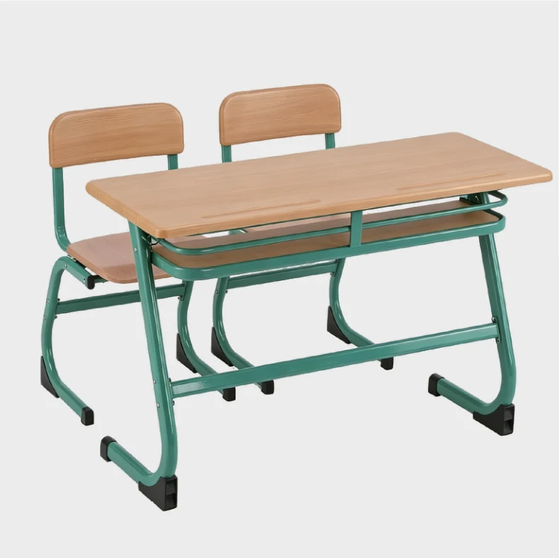
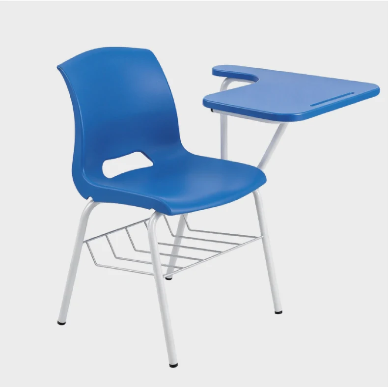
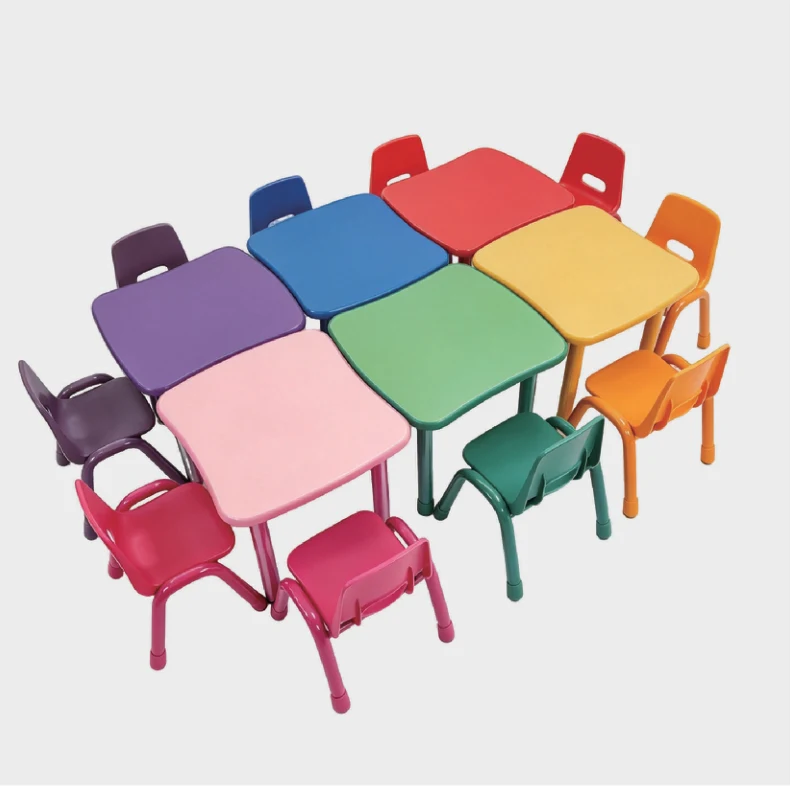
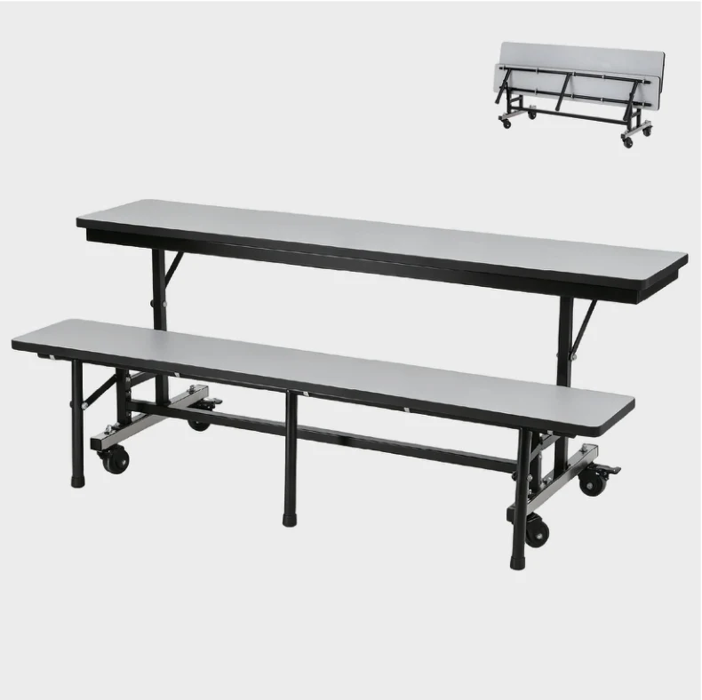
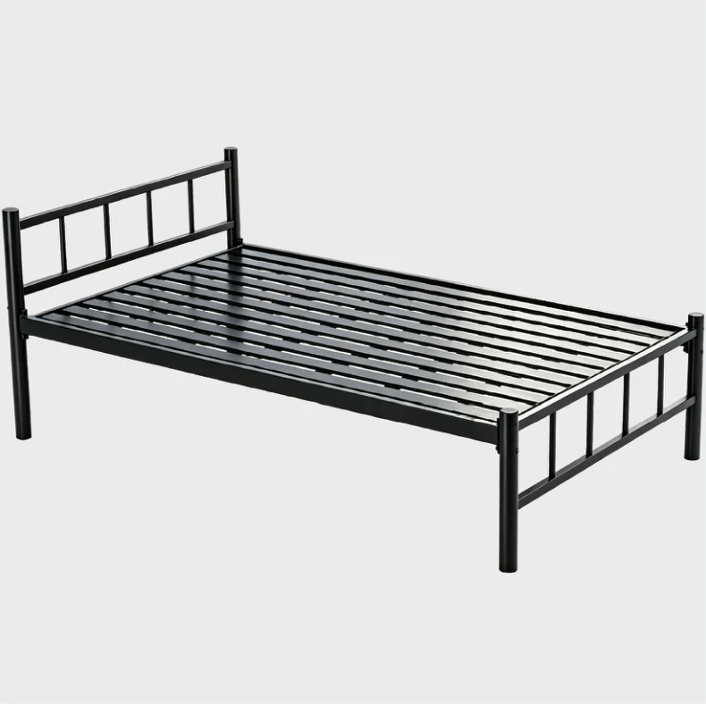
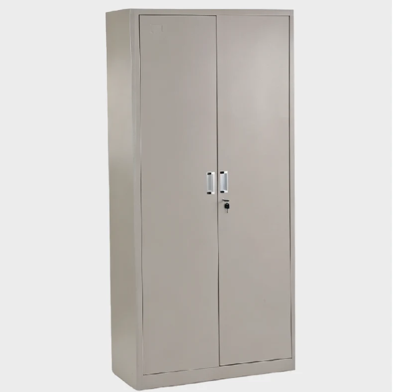

Achats & personnalisation
Logo sur du mobilier scolaire : que faire valider avant la commande ?
Une fiche de validation pour discuter d’un logo ou d’un repère d’établissement sur le mobilier, sans présumer la faisabilité du marquage.
Mobilier scolaire sur mesure · Fabricant en Chine
Appels d’offres · Documents à vérifier

Importateurs · Projets multi-écoles

Choisir par espace
Explorez les gammes selon les espaces de votre établissement.
Exemples du catalogue
Voici quelques exemples de nos gammes. Consultez le catalogue pour découvrir d’autres modèles et configurations.
Construisez une sélection cohérente pour votre marché.
Rassemblez les produits et les informations de votre consultation.
Préparez une liste d’équipement adaptée à chaque espace.
La collection
Découvrez les principales familles du catalogue. Les configurations et spécifications sont à confirmer pour chaque commande.

Ensembles individuels et tables-bancs pour aménager les salles de classe. Comparez les configurations et préparez une demande adaptée à votre projet.
Explorer la gamme →

Chaises de classe et sièges avec tablette pour les salles de formation. Le choix du modèle dépend de l’usage, de l’espace et du niveau des élèves.
Explorer la gamme →

Tables et chaises pour les espaces de maternelle. Les dimensions et les configurations doivent être choisies en fonction de l’âge et du cahier des charges.
Explorer la gamme →

Tables avec bancs ou sièges pour les espaces de restauration collective des établissements scolaires.
Explorer la gamme →

Lits métalliques pour les projets d’hébergement scolaire. Indiquez les dimensions, la configuration et les exigences du projet lors de la consultation.
Explorer la gamme →

Armoires et solutions de rangement pour les salles de classe, les bureaux et les espaces pédagogiques.
Explorer la gamme →
Distributeurs & appels d’offres
Un projet bien préparé commence par des besoins précis. Partagez votre liste de mobilier, les quantités et les exigences documentaires.
01
Comparez les configurations et identifiez les produits qui correspondent aux espaces à équiper.
02
Dimensions, matériaux, couleurs, accessoires et exigences du dossier : précisez les critères à examiner.
03
Disponibilité des justificatifs, prix, emballage et conditions de livraison sont confirmés dans l’offre.

Dans les coulisses de WangLi
Du travail du métal à la présentation des modèles, découvrez le site et les ateliers de Zhejiang Wangli Teaching Equipment Co., Ltd.
Découpe, soudage, cintrage, perçage et stockage : des vues de nos espaces pour mieux préparer votre échange avec l’équipe.


Avant votre consultation
Indiquez les produits, les quantités, le pays et le port de destination si vous le connaissez, ainsi que les dimensions et la date souhaitée. Pour un appel d’offres, joignez le cahier des charges par e-mail.
Les possibilités de dimensions, de couleurs, de matériaux et de marquage dépendent du modèle. Elles sont à examiner et à confirmer dans l’offre.
Transmettez la liste des pièces demandées. La disponibilité et le champ d’application des fiches, rapports, certificats ou autorisations sont à vérifier avant tout engagement.
Ils dépendent des modèles, des quantités, des configurations et des conditions de livraison. Ils sont confirmés dans une offre adaptée à votre demande.
Le Blog WangLi
Des articles pratiques pour choisir votre mobilier scolaire et préparer une consultation B2B.
Une fiche de validation pour discuter d’un logo ou d’un repère d’établissement sur le mobilier, sans présumer la faisabilité du marquage.
Une fiche d’écarts pour examiner un modèle alternatif sans perdre la référence du besoin initial.
Indiquez les produits, les quantités et le pays de destination. Nous examinerons votre besoin avec vous.